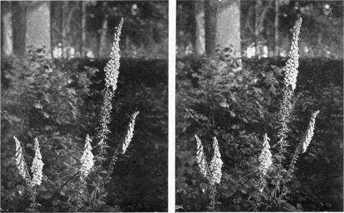
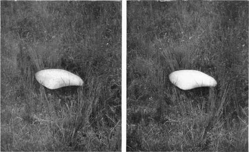

Photographing Flowers, Etc
Description
This section is from the book "Nature Photography For Beginners", by E. J. Bedford. Also available from Amazon: Nature Photography for Beginners.
Photographing Flowers, Etc
Whatever branch of work the Nature Photographer specialises in he will be continually meeting subj ects which are worthy of having a plate exposed upon them, although perhaps not immediately connected with his own particular line of study. He may be out birds'-nesting, for example, and come upon a hawthorn in the full beauty of its white blossom looking as if covered with snow. He will in such a case, no doubt, wish to include a study of a subject such as this amongst his exposures made during the excursion.
The early spring flowers carpeting the woods often appeal irresistibly to us during the period of their beauty, and perhaps later on we may find an extra nice group of field daisies or foxgloves which we do not wish to pass over without a record to remind us of its beauty, and the pleasure the sight of it gave to us.
Fig. 41. Foxgloves.
The large Mushroom shown in Fig. 51 was seen from the train window during a railway journey. The following week I happened to be travelling over the same ground again and was rather surprised to find it still there. It was in a field bordering the line, and being also not far from a station I obtained permission to walk along the line to the spot. Several exposures were made on it, after which I took its measurements. These I found to be fourteen and a half inches across the greatest diameter and seven inches high.
Fig. 51. Large Mushroom (Greatest diam. 14 1/2 ins.; 7 ins. high).
The photographer who does much botanical work will require a tripod which can be used at a very short distance above the ground, because the majority of the subjects are under three feet in height and a good many do not exceed six or eight inches. Focussing will often have to be done, therefore, under difficulties, and another drawback will be the prevalence of wind, especially in districts near the sea-coast. I think I may safely say the wind has given me more trouble than anything else during my experience of photography, and there are very few days throughout the year when the atmosphere is quite still. We go out, perhaps, on a day which we think, before starting, is a still one, but find on trying to photograph a head of blossom on the top of a delicate and fragile stalk what a little breeze is necessary to make it vibrate sufficiently to prevent us obtaining a sharp image. This may be got over to some extent by working during windy days in a wood or some other sheltered spot, if we can find the necessary material there to deal with, or by carrying specimens home to make studies of them indoors, where the wind ceases from troubling. I much prefer, however, to photograph them in situ whenever possible. The early morning and the evening are also times when the air is often much stiller than it is in the middle of the day. So that those who find the wind troublesome must develop the good habit of early rising.
I have already advised that orthochromatic plates be always used, and it is not necessary to repeat this advice except to say that in Flower Photography they are more than ever required. In my own practice, I have not found it necessary to use a yellow screen, unless the subject contains a large amount of blue. The disadvantage of a screen is that it prolongs the exposure, which we often find difficult to cut short enough on account of movement due to wind or other causes. At times it is possible to give a series of intermittent exposures, if a shutter is used which can be worked automatically and without re-setting. When the subject will permit, the shutter can be opened during a comparatively short period of stillness and closed again on the slightest indication of movement. This may be repeated as often as necessary until the full time of exposure required has been given. In a case of this kind extra precaution should be taken to see that the tripod and camera are quite firm, or movement of a more serious character may be the result.
In dismissing from further consideration the important subjects treated of in this chapter, and which have been dealt with in such a fragmentary fashion, it may perhaps be observed that the beginner who has really been an earnest student of Nature will soon obtain, from the almost boundless mass of material available, a valuable store of information and knowledge first-hand from his own practical experience, which is, after all, the best teacher.
Continue to:
Tags
nature, photography, art, birds, camera